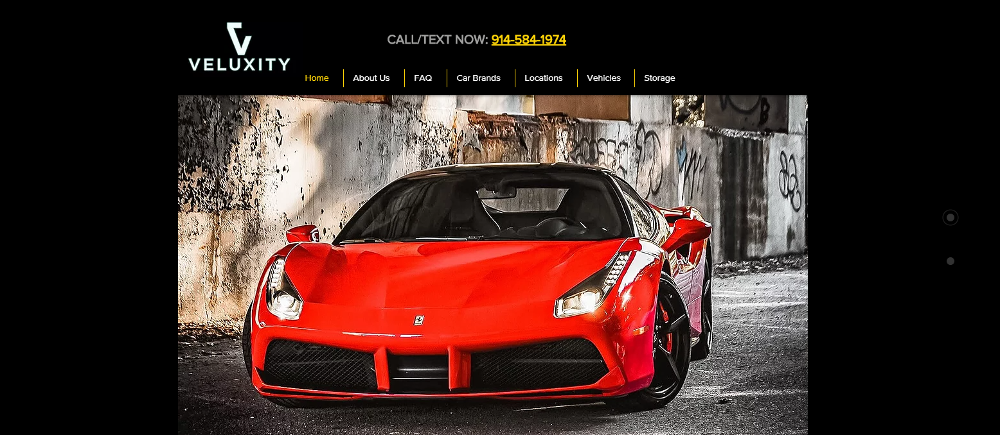

Web Design
I have been looking through websites to discover that luxurious look of web design for cars. It's different than it would be to design a luxurious web design for furniture. I found many sites, and found three sites that had the same feeling as the cars do: Expensive, Fast, and Luxurious. From what I've seen, the idea is to wow the user with the first picture. This picture holds a lot of weight, and the menu's that surround the main picture must add flare to the flashy photo.
In order to understand what makes these sites attractive, I have listed the pros and cons for each of the three sites I found.
- Pro's:
- Love the black space around the photo. This design uses contrast well by bringing in the black and red.
- The logo for their site looks foreign like the Ferrari symbol, and adds an intrigue to it.
- The buttons on the side make the site feel like there's more to unwrap for the site.
- Con's:
- Everything is centered, but it's not. The menu and phone number is above the car, which is good, but why is the logo there? It makes it feel more like an after thought.
- The buttons off to the side have the strangest function. I figured they would switch the picture, or change the site to light instead of dark. The buttons do none of those things, and actually serve as an awkward scroll.
- Color wise: Why is the gold there? It seems out of place. In fact, it makes the white feel out of place.
- Pro's:
- Love the auto changing photos.
- The borders are really great at leaving a finishing touch to the site. The top border menu is generally in a great spot for each of the photos, and feels like they put thought into this.
- The dropdown menu's on the top border are transparent, and well designed and separated. They also include a featured car article.
- The colors are surprisingly found on all areas of the site. There's a tan accent color, that becomes used in the drop down menus. This doesn't feel like a new color because of the highlight of tan in the bottom border, and language selection in the top border.
- Love the clickable car brands at the bottom. In fact, they do bring you to that brand of cars for rent as you might expect.
- Con's:
- The biggest annoyance on the page are the clickable side arrows on each side of the page. The expectation is quick swiping gallery, but no. They basically don't work, and the images continue to cycle through the way they started.
- What's the name of the company? Is it Luxury Services, or Luxury & Services? This isn't clear on the page. It does have a designated spot making it look special, but the first thought is that they are describing their company.
- With all of the repetitive colors, the site flows well but maybe to well? There's something off with the site design. I can't completely figure it out, but the top menu bar feels like the problem. Almost as if, the menu band is too small and doesn't match the bottom bar, or the "logo" is not different enough in height to give it flare.
- Pro's:
- Love the gold shield logo.
- Love the added bonus of the main picture's architecture accenting the cars.
- The cars are color coded, something very minor but effective
- Also, not noticed, there's only two types of cars in the photo. Yet, it feels like there's more than that.
- The layout is clear. Logo on one side, and info on other side.
- Con's:
- The gold on the logo, and accent items are different colors.
- With how impressive the main photo is, why not use the colors from it? Most sites I found used black and gold. It makes sense, but not with this photo. What if they used the loads of white color and used it to create a white, new fresh feel.
- The proximity of the top right menu, and contact info is either not far enough from each other or needs to be closer.
One Major Con
After enjoying these site's designs, I realized it was time to look under
the hood and see how feasible these pages are performance wise. Sadly, these sites were all terrible
in performance under the lighthouse report in the inspect tools. The worst one was the Veluxity
coming in at a score of 19 for performance. The other two scored in around 30 for a performance
score. In fact, the Luxury Services website contains a weird gap in the scalability, and has a menu
displaying as text only. At this point, good luck renting a luxurious car if you have a slow
connection.
These sites looked so nice to start off with, but that kind of performance is never a good thing.
This made me wonder, can you design a site with pictures these large and still have performance?
Essentially, the only things that will help performance are, lazy loading, sizing images, encode
images/balance out quality levels, serve images in next-gen formats. From: Image
Optimization Article